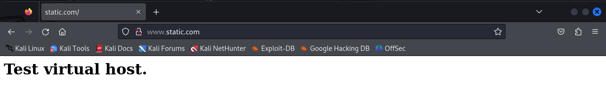
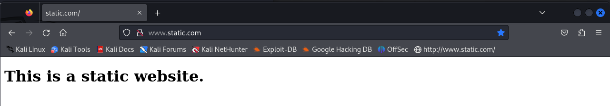

学 生 实 验 报 告
课程名称：Web工程与安全
学校：江西财经大学
学院：计算机与人工智能学院
专业班级：网安231班
姓名：丁一鸣
学号：0235198
实验信息
实验项目：
课程类型：
实验类型：
指导老师：陶小结
学期：2024-2025学年第1学期
1.实验目的
- 熟悉web工作原理
- 搭建静态和动态网站
- 熟悉linux系统
- 了解php、apache、mysql
2.实验内容
- 按照“安装与配置Linux操作系统”文档完成Kali Linux 2024.2系统的安装
- 配置好VSCode以便通过SSH远程连接和操作虚拟机中的Linux系统
- 按照“Web站点搭建与工作原理分析”文档完成Web站点搭建与工作原理分析
3.实验过程
[!IMPORTANT]
（包含实验步骤、观察到的运行结果、实验小结）
- 通过vscode用ssh连接到kali
- 打开apache服务和mysql服务
- 在/var/www/html中写入如下php代码 （老师使用的是getdit将php代码写入文件，这里图个方便，使用了kali自带的vim写入代码）：
- 打开火狐浏览器，输入url：http://localhost/test.php （这里的意思应该是访问主机上的test.php文件，即刚刚写的代码，通过浏览器渲染成了：Hello World!） 可以看到一下结果
注：以上已经为网站的搭建配置好了环境，接下来就是搭建静态网站和动态网站了
部署静态网站
- 在/var/www目录下创建文件夹static
- 在static目录下创建文件index.php并写入一下代码
- 为站点配置文件 （这里我也不太懂是什么意思，这个文件是写下apache2目录下面，看这个意思应该是在apache上设置这个网站的url：www.static.com）
- 创建新建虚拟主机的符号连接，并重启服务器更新配置 （这个步骤的意思应该是上一个文件生效）
- 为站点的域名指定具体的IP地址 （做完这个步骤浏览器就可以通过url找到相应的服务器ip访问服务器上的网站文件）
- 在火狐浏览器上就可以访问到部署在自己主机上的静态网站：www.static.com

- 上面那个网页是使用php写的，也可以使用html写网页回到目录/var/www/static并将原测试网页删除新建一个html文件 （这里的rm命令添加了一个-rf意思应该是删除目录，如果不加删除的是文件）
- 再次使用火狐浏览器访问www.static.com可以看到一下界面：

注:以上即为部署静态网站的过程
部署动态网站
- 登录mysql数据库，为动态网站创建数据库 （根据动态网站的定义，动态网站应该有数据库存储用户数据，这个mysql没学过，以前了解过，但是还是看不懂啊，大概意思应该就是创建一个表格去存储用户的数据，那个QUIT还是看的懂得，包是退出的意思）
- 输入
mysql -u user -p测试新增用户状态，按照步骤分别输入STATUS、USE loginsystem、SHOW TABLES可以看到数据表，如下图：

- 重复文档中4.6中的步骤
- 添加域名与本地IP的映射关系
- 在/var/www/dynamic目录中新建config.php作为网站与数据库交互的接口 （这句话应该没啥别的意思，就是字面意思）
- 在火狐浏览器中输入url：http://www.dynamic.com/config.php 可以看到一下结果：
- 制作动态网站的注册界面
- 在火狐浏览器中访问http://www.dynamic.com/register.php 可以看到一下界面

- 注册一个账号可以看到一下结果：
- 制作动态网站的登录界面
- 在/var/www/dynamic目录中新建main.php作为网站与数据库交互的接口 （按我的理解就是这个文件是用来连接前端和后端的）
- 使用火狐浏览器访问url：http://www.dynamic.com/login.php 并且输入用户名和密码，可以看到一下结果：
注：以上就是部署动态网站的过程
部署博客网站(这个地方一言难尽呀)
- 下载CMS模板（注：没有图片，运行出了一大堆东西，截图截不下来）（这个地方卧槽太坑了，我一开始直接复制命令到vscode上运行导致wordpress安装在/var/www，后来改了到了/var/www/blog下才显示出页面）
- 数据库配置
- 参照4.6操作，下面是正确的操作 （我勒个豆，这里我一开始没注意直接赋值了4.6中的代码，没有将代码中的
www.static.com改成www.dynamic.com导致浏览器显示不出页面）
- 使用火狐浏览器访问www.blog.com可以看到：
实验小结
在本次Web工程与安全课程的实验中，我深入学习了Web工作原理，并成功搭建了静态和动态网站。通过这一系列的实验操作，我不仅熟悉了Linux系统，还对PHP、Apache和MySQL等技术有了更深入的了解。
实验目的和收获：
实验的主要目的是通过实践来加深对Web工作原理的理解，并掌握搭建静态和动态网站的技能。通过实验，我学会了如何使用VSCode通过SSH连接到Kali Linux系统，以及如何配置Apache和MySQL服务。此外，我还学习了如何编写PHP代码来创建动态内容，并理解了如何通过配置文件来设置网站的域名和IP地址映射。
关键步骤和操作：
实验过程中，我首先通过VSCode连接到了Kali Linux，并成功开启了Apache和MySQL服务。接着，我在/var/www/html目录下编写了PHP代码，并成功通过浏览器访问到了“Hello World!”的页面。在静态网站的部署过程中，我在/var/www目录下创建了static文件夹，并编写了index.php文件。动态网站的部署则涉及到了登录和注册界面的创建，以及与MySQL数据库的交互。
遇到的问题及解决方案：
在实验过程中，我遇到了一些问题，比如在配置Apache虚拟主机时出现了路径错误，导致网站无法正确访问。通过仔细检查配置文件和咨询同学，我最终找到了问题所在并成功解决了它。另一个挑战是理解MySQL数据库的创建和用户数据的存储，通过查阅文档和实践操作，我对数据库有了更清晰的认识。
技术细节的理解：
通过本次实验，我对Web服务器如何处理HTTP请求有了更深入的理解。我学习了如何通过Apache配置文件来设置网站的URL，以及如何通过PHP代码与MySQL数据库进行交互。此外，我还了解了如何通过浏览器访问本地部署的网站，并理解了域名与本地IP地址映射的重要性。